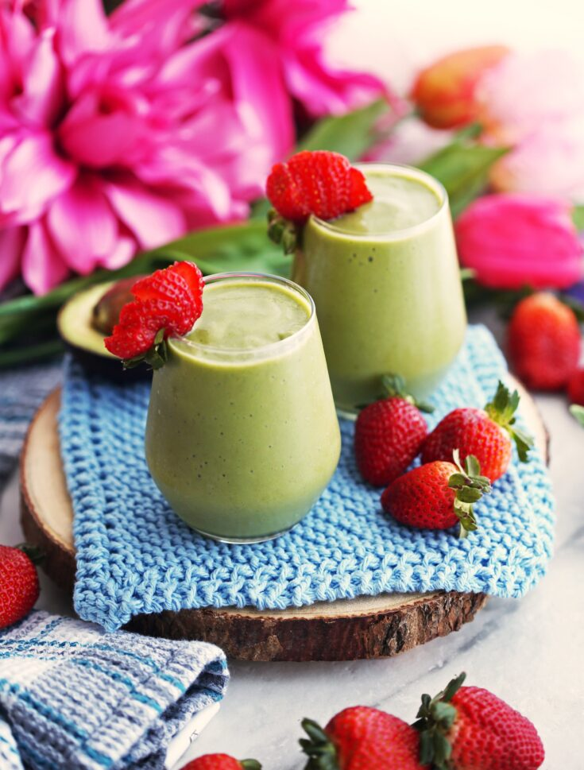
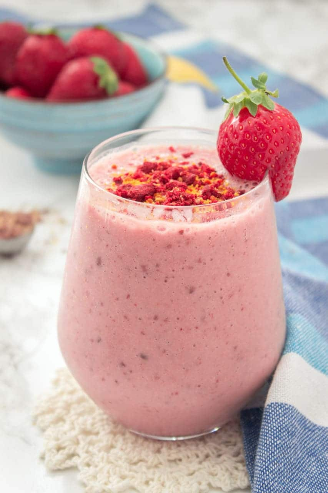
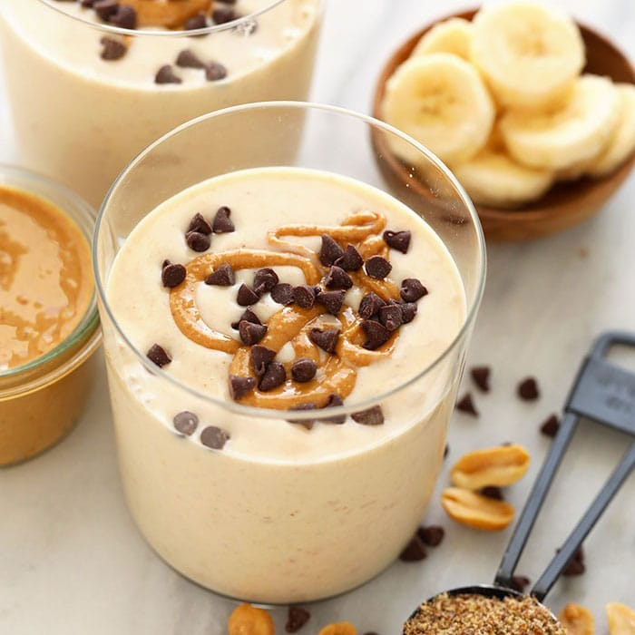
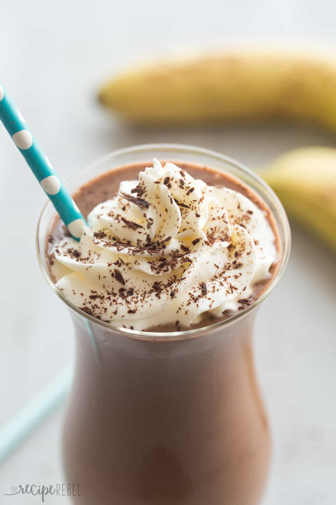
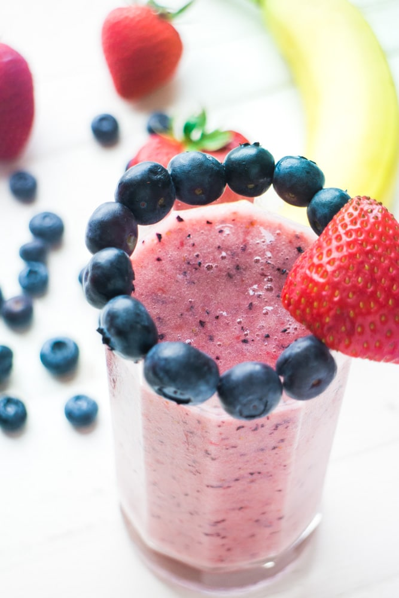

Smoothies
Ingredients
Benefits
Strawberry Avocado Smoothie

- 1/4 Cup milk
- 3/4 Cup plain or vanilla yogurt
- 1 Whole banana
- 1 1/2 Cup frozen strawberries
- 1/4 avocado
- 1/4 tsp Vanilla extract
- Avocados Are Loaded With Fiber.
- Avocados Can Lower Cholesterol and Triglyceride Levels.
- Avocardos Contain More Potassium.
- These potent little packages protect your heart, increase HDL (good) cholesterol, lower your blood pressure, and guard against cancer.
- Packed with vitamins, fiber, and particularly high levels of antioxidants known as polyphenols, strawberries are a sodium-free, fat-free, cholesterol-free, low-calorie food.
Strawberry Peanut Butter Banana Smoothie

- 3/4 Cup Plain Yogurt
- 5 large frozen Strawberries
- 1 Banana
- 2 Tbsp Peanut Butter
- 2 Tbsp Milk (a splash)
- They're an excellent source of vitamin C and manganese and also contain decent amounts of folate (vitamin B9) and potassium.
- Strawberries are very rich in antioxidants and plant compounds, which may have benefits for heart health and blood sugar control.
- Bananas are one of the best fruit sources of vitamin B6.
- Bananas are respectable sources of vitamin C.
Peanut Butter And Banana Smoothie

- 3/4 Cup plain or vanilla yogurt
- 2 Tbs Peanut Butter
- 1 Banana
- 1/8 Cup milk
- 3/4 Cup ice
- Bananas are one of the best fruit sources of vitamin B6 and vitamin C.
- Managing blood sugar levels.
- Reducing the risk of breast disease.
- Boosting heart health.
Chocolate Banana Smoothie

- 1/4 Cup milk
- 3/4 Cup plain or vanilla yogurt
- 1 Banana
- 3 Dove Chocolates (dark) or roughly 2-3
- Tbsp Chips
- 1 Cup ice
- Chocolate Banana Smoothie is a healthy, filling breakfast or snack, loaded with wholesome ingredients for a boost of protein, vitamins, calcium, and fiber.
- Improve Brain Function.
- May Improve Blood Flow and Lower Blood Pressure.
- Powerful Source of Antioxidants.
Chocolate Peanut Butter Smoothie

- 1/4 Cup milk
- 3/4 Cup plain or vanilla yogurt
- 1 Banana
- 2-3 Tbsp Dark Chocolate Chips
- 1 Cup ice
- 2 Tbsp Peanut Butter
- This protein-rich Chocolate Peanut Butter Smoothie is perfect mood-boosting breakfast.
- It's filling and ready in 5 minutes Satisfying, decadent yet totally healthy.
- Also, creamy, rich, chocolaty and with an ice-cream-like texture
Strawberry, Banana and Blueberry Smoothie

- 1/8 Cup milk
- 1/2 Cup plain yogurt
- 1 Whole banana
- 1/2 Cup frozen strawberries
- 1/2 Cup frozen blueberries Cinnamon
- Strawberry,Banana and Blueberry Smoothie. The berry combo in this Berry Banana Smoothie provides vital nutrients necessary for healthy hair, skin, and nails, as well as an enduring energy boost.
- This low calorie smoothie is deep purple in color and is one of the most popular blends out there.
Nutty Buddy Smoothie

- 1 Cp Milk
- 1 Ripe Banana
- 1/4 Cup Mixed Nuts
- 2 Tbsp Peanut butter
- 2 Scoop Whey protein powder
- 2 Tsp Honey
- 1 Tsp Cocoa powder
- Peanut butter may be consumed post workout, either with a piece of multi-grain toast or in the form of a smoothie.
- However, smoothie is a better option as compared to other recovery meals. This is because it contains other recovery-boosting foods like whole milk, banana and yogurt.
- Bananas are rich in fast-acting carbs.